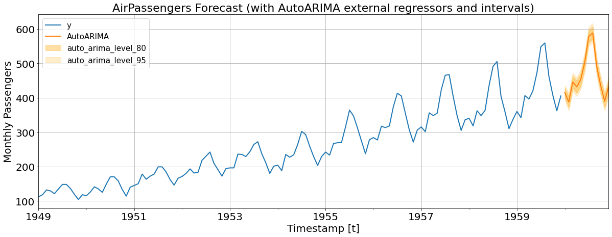

!pip install statsforecastExogenous Regressors
How to include exogenous regressors.
With StatsForecast you can easily include exogenous regressors. Some methods, such as AutoARIMA, have the ability to include exogenous regressors, while other models only use the time series information. StatsForecast takes care of passing the exogenous variables to the models that use them.
Install statsforecast
import matplotlib.pyplot as plt
import numpy as np
import pandas as pd
from statsforecast import StatsForecast
from statsforecast.models import AutoARIMA
from statsforecast.utils import AirPassengersDF as Y_dfIn this example, we will use the AirPassengers dataset to show how to work with exogenous regressors.
Y_df.head()| unique_id | ds | y | |
|---|---|---|---|
| 0 | 1.0 | 1949-01-31 | 112.0 |
| 1 | 1.0 | 1949-02-28 | 118.0 |
| 2 | 1.0 | 1949-03-31 | 132.0 |
| 3 | 1.0 | 1949-04-30 | 129.0 |
| 4 | 1.0 | 1949-05-31 | 121.0 |
Split train/test sets
We will use the last 12 observations of the dataset as the test set.
horizon = 12
Y_train_df = Y_df[Y_df.ds<='1959-12-31'] # 132 train
Y_test_df = Y_df[Y_df.ds>'1959-12-31'] # 12 testAdd exogenous regressors
In this example, we will include the trend as exogenous regressor. But you can include as many as you have or want.
Y_train_df['trend'] = np.arange(1, len(Y_train_df) + 1)Y_train_df.head()| unique_id | ds | y | trend | |
|---|---|---|---|---|
| 0 | 1.0 | 1949-01-31 | 112.0 | 1 |
| 1 | 1.0 | 1949-02-28 | 118.0 | 2 |
| 2 | 1.0 | 1949-03-31 | 132.0 | 3 |
| 3 | 1.0 | 1949-04-30 | 129.0 | 4 |
| 4 | 1.0 | 1949-05-31 | 121.0 | 5 |
Y_train_df.tail()| unique_id | ds | y | trend | |
|---|---|---|---|---|
| 127 | 1.0 | 1959-08-31 | 559.0 | 128 |
| 128 | 1.0 | 1959-09-30 | 463.0 | 129 |
| 129 | 1.0 | 1959-10-31 | 407.0 | 130 |
| 130 | 1.0 | 1959-11-30 | 362.0 | 131 |
| 131 | 1.0 | 1959-12-31 | 405.0 | 132 |
Observe that the exogenous regressors have to be placed after the target variable y.
Create future exogenous regressors
In order for the model to produce forecasts, it needs the future exogenous regressors. In this section we will construct a dataframe that includes the future trend.
X_test_df = pd.DataFrame({
'unique_id': 1.0,
'ds': pd.date_range(start='1960-01-01', periods=horizon, freq='M')
})
# We construct xreg for test. The train series ends at the 133th step.
X_test_df['trend'] = np.arange(133, 133 + horizon)
X_test_df.head()| unique_id | ds | trend | |
|---|---|---|---|
| 0 | 1.0 | 1960-01-31 | 133 |
| 1 | 1.0 | 1960-02-29 | 134 |
| 2 | 1.0 | 1960-03-31 | 135 |
| 3 | 1.0 | 1960-04-30 | 136 |
| 4 | 1.0 | 1960-05-31 | 137 |
Train the model
season_length = 12
model = StatsForecast(
df=Y_train_df,
models=[AutoARIMA(season_length=12)],
freq='M',
n_jobs=-1
)Forecast mode
The StatsForecast.forecast method is more computationally efficient since it does not save objects during training and predicting. The method receives the future exogenous regressors X_test_df.
Y_hat_df = model.forecast(horizon, X_df=X_test_df)
Y_hat_df = Y_hat_df.reset_index()
Y_hat_df.head()| unique_id | ds | AutoARIMA | |
|---|---|---|---|
| 0 | 1.0 | 1960-01-31 | 414.551483 |
| 1 | 1.0 | 1960-02-29 | 387.550842 |
| 2 | 1.0 | 1960-03-31 | 445.526978 |
| 3 | 1.0 | 1960-04-30 | 431.495422 |
| 4 | 1.0 | 1960-05-31 | 452.797211 |
fig, ax = plt.subplots(1, 1, figsize = (20, 7))
Y_hat_df = Y_test_df.merge(Y_hat_df, how='left', on=['unique_id', 'ds'])
df_plot = pd.concat([Y_train_df, Y_hat_df_xreg]).set_index('ds')
df_plot[['y', 'AutoARIMA']].plot(ax=ax, linewidth=2)
ax.set_title('AirPassengers Forecast (with AutoARIMA external regressors)', fontsize=22)
ax.set_ylabel('Monthly Passengers', fontsize=20)
ax.set_xlabel('Timestamp [t]', fontsize=20)
ax.legend(prop={'size': 15})
ax.grid()
for label in (ax.get_xticklabels() + ax.get_yticklabels()):
label.set_fontsize(20)
SKlearn syntax
The sklearn syntax can also be used. Fist, train the model using the StatsForecast.fit method.
model.fit()StatsForecast(models=[AutoARIMA])The use the fitted model to produce forecasts. Observe that the StatsForecast.predict method receives the future exogenous regressors.
model.predict(horizon, X_df=X_test_df)| ds | AutoARIMA | |
|---|---|---|
| unique_id | ||
| 1.0 | 1960-01-31 | 414.551483 |
| 1.0 | 1960-02-29 | 387.550842 |
| 1.0 | 1960-03-31 | 445.526978 |
| 1.0 | 1960-04-30 | 431.495422 |
| 1.0 | 1960-05-31 | 452.797211 |
| 1.0 | 1960-06-30 | 502.991394 |
| 1.0 | 1960-07-31 | 577.782837 |
| 1.0 | 1960-08-31 | 587.973938 |
| 1.0 | 1960-09-30 | 491.432617 |
| 1.0 | 1960-10-31 | 435.070312 |
| 1.0 | 1960-11-30 | 389.827820 |
| 1.0 | 1960-12-31 | 432.665527 |
Including prediction intervals
You can also compute prediction intervals using exogenous regressors. Simply add the level argument.
Forecast mode
Y_hat_df = model.forecast(horizon, X_df=X_test_df, level=(80,95))
Y_hat_df = Y_hat_df.reset_index()
Y_hat_df.head()| unique_id | ds | AutoARIMA | AutoARIMA-lo-95 | AutoARIMA-lo-80 | AutoARIMA-hi-80 | AutoARIMA-hi-95 | |
|---|---|---|---|---|---|---|---|
| 0 | 1.0 | 1960-01-31 | 414.551483 | 393.468414 | 400.765991 | 428.337006 | 435.634583 |
| 1 | 1.0 | 1960-02-29 | 387.550842 | 362.181641 | 370.962830 | 404.138855 | 412.920044 |
| 2 | 1.0 | 1960-03-31 | 445.526978 | 418.457153 | 427.826965 | 463.226990 | 472.596832 |
| 3 | 1.0 | 1960-04-30 | 431.495422 | 403.697540 | 413.319366 | 449.671478 | 459.293304 |
| 4 | 1.0 | 1960-05-31 | 452.797211 | 424.679352 | 434.411926 | 471.182495 | 480.915070 |
fig, ax = plt.subplots(1, 1, figsize = (20, 7))
df_plot = pd.concat([Y_train_df, Y_hat_df]).set_index('ds')
df_plot[['y', 'AutoARIMA']].plot(ax=ax, linewidth=2)
ax.fill_between(df_plot.index,
df_plot['AutoARIMA-lo-80'],
df_plot['AutoARIMA-hi-80'],
alpha=.35,
color='orange',
label='auto_arima_level_80')
ax.fill_between(df_plot.index,
df_plot['AutoARIMA-lo-95'],
df_plot['AutoARIMA-hi-95'],
alpha=.2,
color='orange',
label='auto_arima_level_95')
ax.set_title('AirPassengers Forecast (with AutoARIMA external regressors and intervals)', fontsize=22)
ax.set_ylabel('Monthly Passengers', fontsize=20)
ax.set_xlabel('Timestamp [t]', fontsize=20)
ax.legend(prop={'size': 15})
ax.grid()
for label in (ax.get_xticklabels() + ax.get_yticklabels()):
label.set_fontsize(20)
SKlearn syntax
Since the model is already fitted, just add level=(80,90) to the StatsForecast.predict method.
model.predict(horizon, X_df=X_test_df, level=(80, 90))| ds | AutoARIMA | AutoARIMA-lo-90 | AutoARIMA-lo-80 | AutoARIMA-hi-80 | AutoARIMA-hi-90 | |
|---|---|---|---|---|---|---|
| unique_id | ||||||
| 1.0 | 1960-01-31 | 414.551483 | 396.858002 | 400.765991 | 428.337006 | 432.244995 |
| 1.0 | 1960-02-29 | 387.550842 | 366.260345 | 370.962830 | 404.138855 | 408.841339 |
| 1.0 | 1960-03-31 | 445.526978 | 422.809265 | 427.826965 | 463.226990 | 468.244720 |
| 1.0 | 1960-04-30 | 431.495422 | 408.166718 | 413.319366 | 449.671478 | 454.824127 |
| 1.0 | 1960-05-31 | 452.797211 | 429.199951 | 434.411926 | 471.182495 | 476.394470 |
| 1.0 | 1960-06-30 | 502.991394 | 479.274841 | 484.513153 | 521.469604 | 526.707947 |
| 1.0 | 1960-07-31 | 577.782837 | 554.013000 | 559.263123 | 596.302551 | 601.552612 |
| 1.0 | 1960-08-31 | 587.973938 | 564.180298 | 569.435669 | 606.512207 | 611.767517 |
| 1.0 | 1960-09-30 | 491.432617 | 467.628357 | 472.886047 | 509.979187 | 515.236877 |
| 1.0 | 1960-10-31 | 435.070312 | 411.261261 | 416.520020 | 453.620575 | 458.879333 |
| 1.0 | 1960-11-30 | 389.827820 | 366.016632 | 371.275848 | 408.379761 | 413.638977 |
| 1.0 | 1960-12-31 | 432.665527 | 408.853394 | 414.112823 | 451.218231 | 456.477661 |
Give us a ⭐ on Github